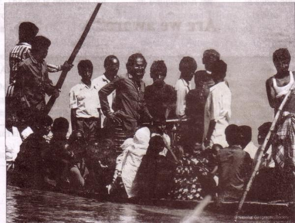
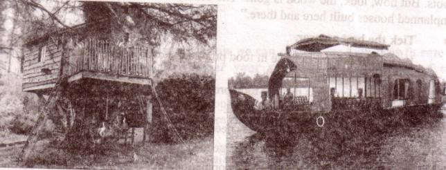

Unit Four
Are we aware?
Learning outcomes
After we have studied the unit, we will be able to
-
ask and tell about problems.
-
seek and give suggestions.
-
listen for specific information.
-
narrate something in writing.
-
read charts and do a project work.
Lesson 1: The ferry boat
A . Look at the picture and answer these questions.

1. Where can you find this kind of boat?
2. Why does the boatman carry passengers across a river? .
3. Why do people use country boats?
B . Read the text and answer the following questions.
"Is there anybody here who has ever crossed a river by a country boat'?"
"I have, teacher," said Jamil. "And I clearly remember what happened in that journey."
"Would you please tell us what happened?" the teacher asked.
"Okay, teacher. It happened while I was in class 6. On a weekly bazar day, people were coming back with their shopping bags and baskets in hands, on shoulders an heads. They had to cross the river. It was not a big river. There was a 'ferry boat plying on the river. The boat could cross it in 8-10 minutes. It was just after sunset. The weather was getting worse. The wind started blowing from the north-west. Black clouds were moving fast in the sky.
Everybody was trying to get into the boat. `No more, no more, please wait,' shout the boatman. But nobody listened to him."
"What happened then, Jamil?" asked Rumi.
39with too many people on board, the boat sank in the middle of the river," replied jamil.
''Oh no! What happened then?" asked the teacher. "Thank God. It was not a fatal accident. All the passengers swam to the other side. But some of them lost their things such as oil, salt and milk," said Jamil.
“were you on the boat?" asked the teacher. "No, teacher. Seeing the boat overcrowded, 1 waited for the next time," replied Jamil.
“You've done the right thing, Jamil."
Questions
Tick the best answer.
1 . A ferry boat was plying on the river. Here `plying' means
a. playing with other boats.
b. sinking in the river.
c. traveling along a route.
d. waiting for passengers.
2 . Why was everybody trying to get into the boat? Because
a. it was a weekly bazar day.
b. after sunset no ferry would ply on the river.
c. everybody had shopping bags with them.
d. it was going to be a dark and stormy evening.
3 . The boatman requested the people to wait, because
a. his boat was very small.
b. the boat had already too many people.
c. there were other boats they could go.
d. he would not ferry people with bags and baskets.
4 . “With too many people on board, the boat sank ..." Here the phrase `on board' means
a. on the boat.
b. on the wooden board.
c. outside the boat.
d. on the notice board.
5 . It was not a fatal accident.
The statement tells us that
40a. nobody died.
b. nobody was wounded.
c. everybody accepted their fate.
d. nobody lost anything.
6 . The boat was overcrowded. Here 'overcrowded' means
a. people were quarreling on the boat.
b. the boat was unable to carry any more people.
c. the boatman did not like a crowd.
d. people were sitting on the boat's bamboo hood.
`
C . Discuss in groups and write answers to these questions.
1. Why do many people have little or no patience with these kinds of situations as in the ferry boat?
2. 'No more, No more, please wait' who said this? Explain in 2/3 sentences.
3. Describe the problems given below:
a. If we have too many buyers of fish in the market, what is likely to happen?
b. If we have too many passengers at a bus or train station, what may happen?
c. If we have too many people in a village / town / city, what will happen?
Lesson 2: Are we too many?
A . Read the text and do the following project work.
The next day when the teacher came to the class and was about to start the lesson Shanti Barua stood up and said, "Teacher, can I ask you a question, please?"
"Go ahead, Shanti," said the teacher.
"In our last class, we heard Jamil's story of how too many people made the ferry boo sink. I have also seen crowds of people at the bus stand, railway station, launch a steamer ghats. It is not uncommon to see people traveling on top of a bus or train a meeting with tragic accidents. My question is: Are we really too many people in the country?"
"Thank you, Shanti. Please sit down."
The teacher then looked round the class and asked, "How many of you have the same question in mind?"
Almost all the hands went up.
"Okay," the teacher continued. "Finding the right answer to this question is very
41important for us - for our national development. So we will look at this issue with some facts so that we can find out if we are really too many or not."
Project Work: Discuss in groups and carry out a survey on this topic:
“Too Many people” You can do the following things:
-
Select only one small area such as your village or locality in the town/city
where you live.
-
Find out its area. (You can do it by walking around it. At normal speed
you can cover about one kilometer in ten minutes. )
-
Find out the number of people living in it.
-
Find out about the people's occupations, unemployment and poverty.
B . Listen to the teacher / CD. Listen how the teacher talks about the population of Bangladesh and answer the following questions.
|
Listening text 3 |
Questions
Tick the best answer.
1 . Bangladesh is a small country, because
a. it's land area is small.
b. it has about 150 million people.
c. it is the 8th among the top populous countries.
d. it has limited resources.
2 . Density of population in any country means
a. all the people in a country.
b. number of people living in one square kilometer.
c. 1000 people living in one sq. km.
d. too many people living in sq. km.
3 . Our population growth rate is
a. 1.9%
b. 1.40%
c. 2.1%
d. 1.1%
4 . Our birth rate is ______per thousand.
a. 6.1
b. 1.40
c. 20.1
d. 14
425. What will be the size of our population in 2050?
a. 150 m
b. 197 m
c. 217m
d. 250m
C . Listen again and answer these questions.
1. How do you get the population growth rate of a country?
2. Why will the population of Bangladesh be so large in 2050?
D . Read the chart and fill in the gaps with information from the table. Use comparatives and superlatives where necessary. Chart showing facts about some countries including Bangladesh.
Bangladesh Sri Lanka India China
|
- |
Bangladesh |
Sri Lanka |
India |
China |
|
Land area |
144,000 sq km (approx) |
65, 600 sq km |
3,287,590 sq km |
9,600,000 sq km |
|
Population |
150m |
20m |
1.15b |
1.33b |
|
Density of population |
1000 |
332 |
382 |
143 |
| Birth rate (Per 1000) |
20.1 |
17.42 |
22.22 |
12.29 |
| Death rate (Per 1000) |
6.1 |
5.92 |
7.48 |
7.03 |
|
Growth rate |
1.40% |
0.7% |
1.41% |
0.5% |
In laud area Bangladesh is (1) (larger) than Sri Lanka. but (2) [dash] than India China is, of course,(3) [dash] than each of the other three countries. Sri Lanka has the (4) [dash] population among the four countries. However, China has the (5) [dash] population shown in the chart. In fact, China has the (6) [dash] population in the world and India has the (7) [dash] highest population in the world. On the other hand, China has the(8) [dash] growth rate among the 4 countries. Bangladesh has (9) [dash] growth rate than India, but higher birth rate than (10) [dash] and(11) [dash].
E . Write a paragraph about the population situation of China. Use the facts given in the chart in D above.
43Lesson 3: Our food and shelter
A. Look at the pictures and answer these questions.
1. What do the people do in trees and the boats'?
2. Why do they do so`?

B . Discuss what will be our problems if our population becomes double the number we have now.
C . Read what the teacher Ms Choudhury and her students are talking about.
The class comes up with different Problems. One group leader says, “The scarcity of food will be a serious problem. It is true that our agriculturists have developed new varieties of rice and its per acre production has definitely increased. But the rate of increase in food production cannot keep pace with the rate of population growth. This is because our land is fixed. i.e. we cannot increase it, while our population is increasing rapidly."
Another group leader comes up with the housing problem in the country, which he says adds much to the food problem. He continues, "Families are growing larger in size and breaking into smaller families. Each such family needs a separate house to live in. Also the arable fields are being divided by these smaller families among themselves. Mills and factories are being set up, which occupy a considerable portion of our land. So when we need more land to grow more food to feed more mouths, our land is shrinking day by day. If our population grows at the present rate, a day will come when many people will not find any land to build a house on. And, as a result, many of them might live on trees or on the floating boats in the rivers."
“No way,” another student argues. "Trees are being cut, hills are being cleared and bodies are being tilled up --- all to meet the needs of too many people."
Thank you students," Ms Choudhury says, "You're quite right. Let me tell you about village where I was born and brought up. Things were not like this in the past. I remember as a child, the village was so beautiful! The green paddy fields and yellow mustard fields seemed to be unending. They used to wave and dance in the breeze. There used to be a wood in the northern side of the village. There was a tall tamarind tree in the middle of the wood. Also a big banyan tree looked like a huge green umbrella, with its aerial roots hanging down. I often used to go there with my age mates. We would often have picnic there. While the boys would climb the tamarind tree and pick some tamarinds, I and my best friend Rima used to swing with the roots. But now, look, the wood is gone. The beauty of the crop fields is spoiled by the unplanned houses built here and there."
44D . Tick the best answer.
1. The rate of increase in food production cannot keep pace with the rate of population growth.
The sentence means that the food production
a. is as much as needed.
b. is less than what is needed.
c. is more than what is needed.
d. is sufficient for the population.
2. How can our housing problem increase or add to our food problem?
a. After making houses, farmers do not have enough time to work in the field.
b. After making houses, farmers do not have enough money to buy food.
c. If you do not have a house, you cannot store your food.
d. For making too many houses, people are using the crop land.
3. What makes our land shrink day by day mentioned in line no. 13?
a. Families are growing larger in size.
b. Houses and factories are being built on it.
c. Smaller families need smaller houses.
d. Land grabbers are occupying a portion of our land.
4. Many people may have to live on trees, because
a. they would like tree houses.
b. making houses on trees is less expensive.
c. they may not find land to make houses.
d. tree houses are safer during floods.
5. People are cutting trees to
a. plant more trees.
b. keep the environment clean.
c. make articles of furniture.
d. grow crops or make houses.
45E . Make a list of things Ms Choudhury saw as a child in the village. How do you know from the text that she liked them?
F . Write a composition about your village or locality. Describe any change in the things you have noticed over the years, such as houses, fields, trees, plants, etc.
Lesson 4: The story of Lipi
A . Discuss in groups and suggest how we can control the high growth rate of our population. Check whether your suggestions include any of the following:
1. Raise awareness among the people particularly in the rural areas about the bad consequence of having more children in the family.
2. Stop child marriage.
3. Keep the size of the family small with two children --- two girls or two boys or one girl and one boy.
B . Read the story of Lipi and answer the questions.
In the next class Ms Choudhury tells her students the story of Lipi.
The Year before last, Lipi, a 14-year old girl was in class 9 in a rural school in Rangpur. Lipi is the eldest of five children---three daughters and two sons. Their father is a day labourer working on other people's land and mother is a homemaker and a part-time worker at other people's houses. The parents, particularly the mother, found it real difficult to raise five children on the small income the father could earn. Perhaps that is why Lipi's father wanted to marry her off. But Lipi was not ready to accept What her parents wanted to impose on her. She wanted to pursue her education. So long her mother stood by her, though secretly. But when her father arranged her marriage with Tara Mia, the only son of a farmer in the same village, she became a little upset. Tara Mia was a widower-illiterate, but well off. His father had a few acres of arable land and was influential in the village. The marriage seemed to be inevitable.
Question 1
Discuss in groups and agree upon an answer to this question:
What do you think Lipi should do? Why?
Lipi first talked with her classmates and then with the Head teacher, who was very sympathetic to her. He called a meeting of the teachers and students of the school. He also invited the school managing committee members and some respectable persons of the village, to attend the meeting.The Head teacher explained in detail the serious consequences that would follow Lipi's marriage. She would be having children from her very early age 15 or 16. It would create constant health hazards to her. Her education would stop. And on top of all, her marriage against her will might shatter her future dream.
46At one stage, Tara Mia's father stood up and tried to argue, "You are all making mistakes. Lipi would be very happy if she got married with Tara Mia. She would have everything-money, clothes, home and status in the society. Why are you trying deprive her of this opportunity?"
But no, the big majority, who attended the meeting, supported the Head teacher. Lipi's marriage was called off. She is now studying at Carmichael College, Rangpur.
Question 2
Make predictions. One is done for you.
If Lipi had married Tara Mia that time, ...
a. she would have become a mother of one or two children.
b.
c.
d.
C . Fill in the blanks in the passage with will / would.
Ms Anjali Barua, a retired college teacher, is a widow who lives in her own flat in Dhaka. At this stage of her life, she wants to do something for the people of her village in Sherpur district. Her only daughter lives in Khulna with her husband and children. Right now she is in her village home. She is writing about her future plan in a diary.
"I don't exactly know how I should go about my plan. But one thing I know for sure. I (1)[dash] will [dash] need a lot of money for the work. If 1 had 5 million taka, I (2) [dash] start an adult education centre. Then if I found an expert on adult education, I (3) [dash] look like, he (5) [dash] be able to explain in details. I know if the people attended the classes at the centre, they (6) [dash] learn how to read, write and count. 1 (7) [dash] definitely give time to this project. But to carry out the project successfully I (8) [dash] have to live in the village almost permanently. Here is a problem. Who (9) [dash] take care of my flat in Dhaka'? If I had a good, reliable man, I (10) [dash] make him caretaker of my flat. But where (11) [dash] I find such a man?
D . Read the beginning of the history. Write new ten sentences to complete the story in a way you would like.
Nahar, a 18 year old garment`s worker lives with her family in a slum. She dreams of having a life full of joy. One day while going to her work place, she found a piece of gold in front of the factory gate.
47Lesson 5: Let's become skilled workforce
A . In groups discuss the following question and give your opinion to the whole class: Why should we learn English?
B . Read the dialogue between Ratan and Rumi to find out about the importance of English.
Rumi : You remember my brother Raihan, don't you? He applied for a front desk
officer in a 5-star hotel.
Ratan : What's happened? Has he got the job?
Rumi : No! He couldn't answer most of the questions in the interview.
Ratan : Why? He did well in the HSC, didn't he?
Rumi : Yes, he did. But the recruiting officer in the interview asked him questions
in English and he couldn't understand most of them.
Ratan : Sorry but I have a different story to tell you. My cousin Sheela did her
HSC from a college in Mymensingh. She couldn't do as good as Raihan in her exams, but she got a job as a crew member in Biman Bangladesh. She said she answered in English all the questions both in her written test and interview.
Rumi : Great! She must be good at English. Well, then the key to getting
some jobs is English, isn't it?
Ratan : Yes, you're right.
C . Discuss in groups.
1. Try to find out why English is needed for a good hotel front desk officer and a flight crew member.
2. Choose two / three other jobs where English is needed and write why and how English is used in those jobs.
D . Read what Ms Choudhury talks with her students about learning English.
Today there are many jobs where you need English. This is because the world has become smaller. Vast distances are shortened by speedy transport. We can talk to a thousands of kilometres away on the phone or the Internet. So we can communicate with the whole world easily. English has made this communication easier.
There are many countries in the world with many languages, but to communicate with you cannot speak all the languages. So you need a common language that you can use with more or less all the people in the world. English is that common language. You can talk to a Chinese toy maker, a French artist, an Arab ambassador or K Korean builder in one language -English.
48English for us in Bangladesh is all the more important. As we have seen earlier, we are too many people in a small country. So if you learn English, you have the best opportunity to find a good job, both within and outside the country. And that is good news for millions of our unemployed youths."
"But Miss, we learn English for 12 or 14 years, yet we do not find good jobs, " says Rumi. She then tells the class about what happened to her brother. "Could you please tell us why?" Rumi asks.
"This is a very important question, Rumi. We should learn how to use English both orally and in writing for doing things as needed in our work, such as communicating with others at personal, social, national and international levels. But unfortunately, at the moment we are learning English mainly for our exams," continues Miss Choudhury. "Remember, English can greatly help you become skilled workforce."
"But where and how can we learn this kind of English, Miss?" asks Ratan. Ms Choudhury says, "We can learn this communicative English both in and outside the classroom. Side by side with your textbook, the radio, television, newspapers, magazines, computers and other supplementary materials will greatly help you. And during our classroom activities, we'll see how we can learn this English."
E . Write a paragraph by rearranging the following sentences or sentence parts.
1. You can learn a common language in and outside the classroom.
2. You cannot speak all the languages of different people of different
countries to communicate with them.
3. For example, you can do businesses with a Chinese, a Japanese, a French,
an Arab or a Turkese if you know English.
4. Also other things like the radio, TV, computers and newspapers can help
you learn English.
5. Therefore you need a common language, i.e. English, which is understood
by people more or less all over the world.
F . Discuss in groups and write answers to these questions.
1. Describe briefly the things that have made the present world smaller.
2. Give reasons why a common language is needed in today's world.
3. Why is English needed all the more in Bangladesh?
4. How can our youths become skilled workforce?
G . Project: Find out how many people in your village or locality can speak or write English for communication. State their age, education and what they do.